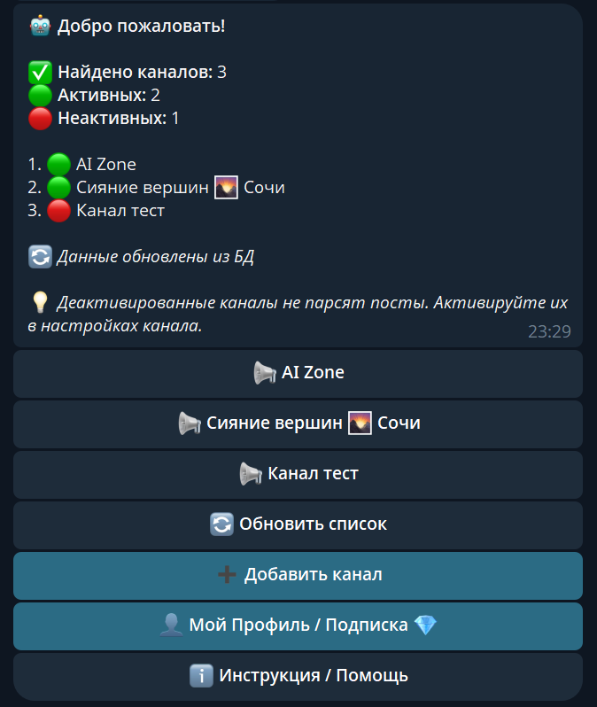
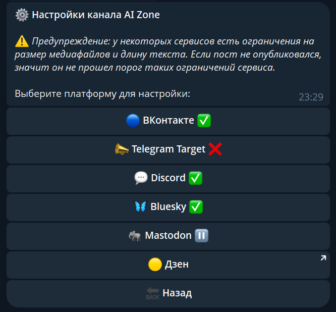
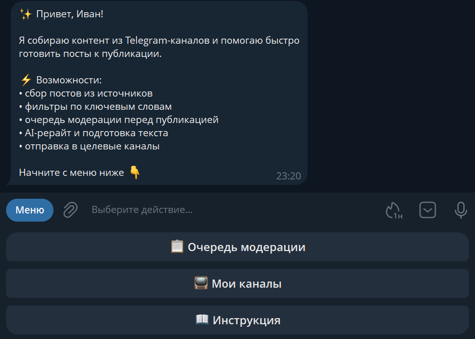
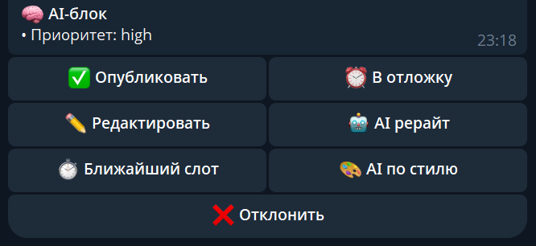
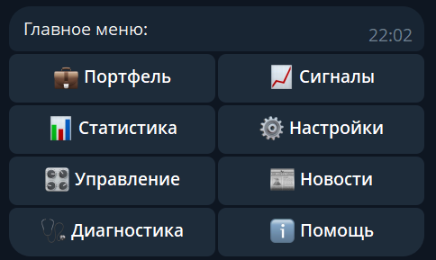
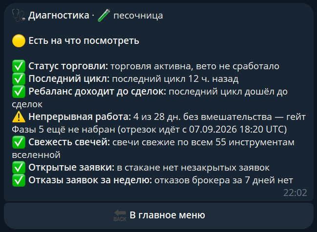
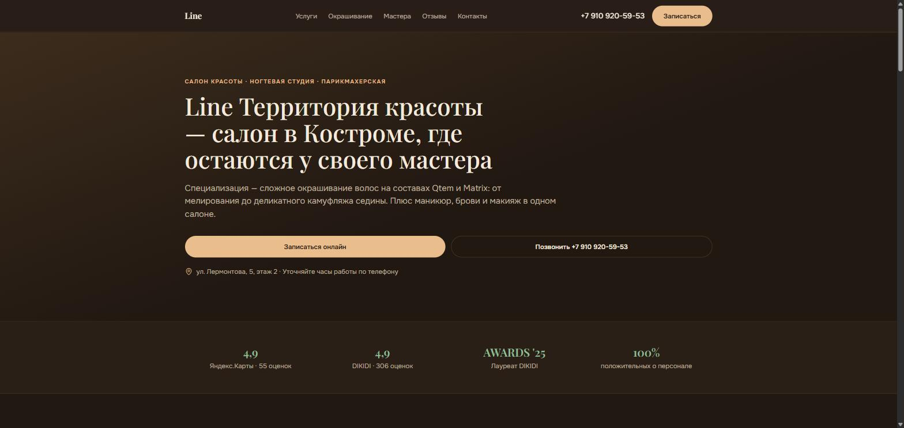
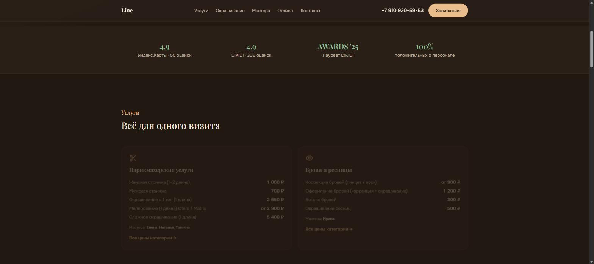
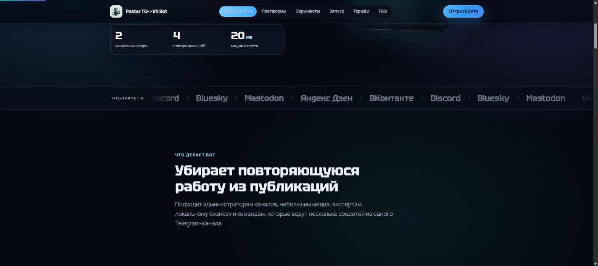

Иван Журавлев
Пишу Telegram- и VK-ботов, которые реально работают на серверах, а не лежат черновиком, и сайты, на которые настоящие клиенты записываются и покупают. Ниже — не портфолио макетов, а то, что уже в проде.
Full-cycle в одиночку
Делаю продукты полного цикла в одиночку: от бота, который парсит контент и переписывает его через нейросети, до сайта, на который клиент в итоге записывается. Поэтому одинаково внимателен и к тому, что происходит в очереди PostgreSQL, и к тому, что видит человек на экране. Три бота ниже сейчас работают на серверах — можно проверить в деле, а не поверить на слово.
Backend
Данные
AI-интеграции
Инфраструктура
Фронтенд / деплой
Работают на сервере прямо сейчас
Код закрыт — это коммерческие продукты. Здесь — что они делают и как устроены.
Кросспостинг из Telegram-каналов в VK, Telegram, Discord, Bluesky и Mastodon. Переписывает текст через DeepSeek перед публикацией, ведёт отдельную очередь для каждого источника и переживает рестарты без потери настроек.


- Публикует текст, фото, видео и альбомы с сохранением форматирования
- Не дублирует посты; при сбоях отключает только проблемную площадку, а не всё сразу
- Приём оплаты через YooKassa, реферальная система, админ-панель с бэкапом БД
Парсит посты из открытых и приватных Telegram-каналов, фильтрует по ключевым словам с учётом падежей и склонений, переписывает текст через GigaChat, YandexGPT или DeepSeek на выбор — и не ломает ссылки при рерайте, в отличие от большинства парсеров.


- Распознаёт голосовые сообщения через Whisper и делает из них готовые посты
- Очередь модерации и отложенный постинг на любую дату и время
- Отдельные AI-промпты для каждого канала и каждой нейросети
Полностью автоматизированный алгоритмический трейдинг на T-Invest API (Т-Банк). Факторная модель (momentum, quality, valuation, volatility, liquidity, дивиденды) считает целевые веса портфеля; риск-гварды (kill-switch, дневной лимит потерь, лимит оборота за цикл) останавливают ребаланс целиком при любой аномалии; Telegram-бот присылает ежедневный отчёт и статус.


Walk-forward бэктест 2019.06–2026.08 (train 3 года / test 1 год), 26 бумаг + парковка свободного кэша в фонд денежного рынка. Гейт: Sharpe выше бенчмарка при просадке не хуже, по каждому тестовому окну отдельно.
- Бэктестинг с учётом издержек и честным train/test-разделением при подборе параметров
- Единое правило сделок для боевого исполнения и бэктеста — бэктест предсказывает то, что бот сделает вживую
- Управление и отчётность через Telegram: /stats, /health, /news, ручная пауза
Не шаблоны — вёрстка под задачу
Оба сайта опубликованы и работают: можно открыть и полистать вживую.


Сайт-визитка салона красоты в Костроме: онлайн-запись, прайс по категориям услуг, состав мастеров. Специализация салона — сложное окрашивание волос на составах Qtem и Matrix.

Лендинг для бота выше: что он умеет, куда публикует, тарифы и ответы на частые вопросы — чтобы человек за минуту понял, нужен ли ему бот, и запустил его в Telegram.
Открытая часть кода
Репозитории самих ботов закрыты — это коммерческие продукты, исходники которых я не раскрываю. На GitHub — описания архитектуры, подходов к задачам и скриншоты, без бизнес-логики.